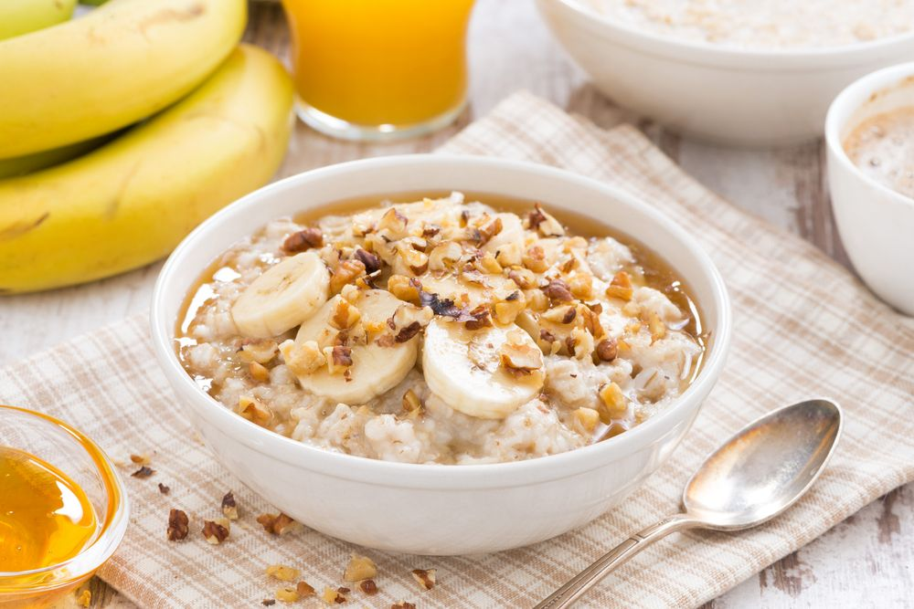

Pregătirea fulgilor de ovăs este un proces foarte rapid. Iată o rețetă de bază pentru a prepara fulgi de ovăs:
Ingrediente:
*50 g Fulgi de ovaz
*150 ml Lapte proaspat 3.2%
*150 ml Apa
*1 lingurita Sirop de artar
*Mix nuci
(dupa gust)
*Stafide
(dupa gust)
*Migdale
(dupa gust)
Mod de preparare:

Punem la fiert laptele, apa, un praf de sare.
Cand dau in clocot, reducem focul la minim.
Adaugam fulgii de ovaz si amestecam foarte bine.
Lasam sa fiarba la foc mic, 10-15 minute sau pana terciul ajunge la consistenta dorita.
Acum e momenteul sa punem in terci arome: vanilie, rom, cacao, coaja de lamaie etc.
Tragem de pe foc si punem siropul de artar, amestecam din nou.
Terciul este gata si il putem pune in farfurie.
Poftă bună!